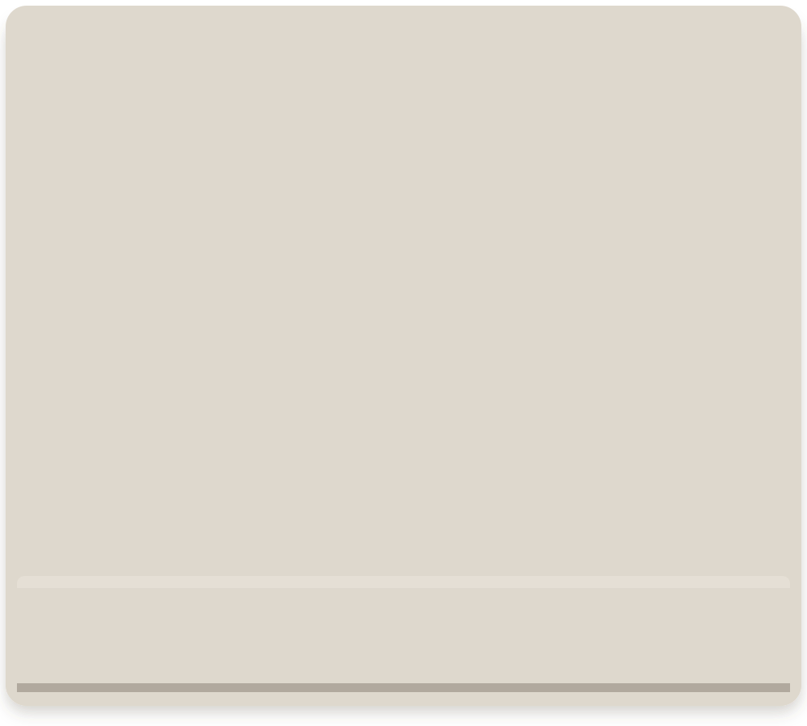
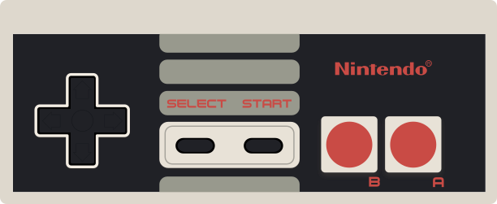

Choose an iNES ROM to begin.

POWER
Nintendo COLOR TV
GAME DECK
STATE MEMORY
PLAYBACK RECORDER
Recording is offCONTROLLER 01WIRED INPUT / READY

Choose an iNES ROM to begin.

GAME DECK
STATE MEMORY
PLAYBACK RECORDER
Recording is off